Using vectorial interval arithmetics within Matlab®
The class interval, presented hereafter, is meant to compute intervals in an efficient and user-friendly way. Efficiency is achieved by making it possible to handle arrays of intervals, and thus perform computations in a fully vectorial way, without using any explicit for loop at any time. User-friendliness relies upon a class structure, that allows overloading Matlab operators, in order to redefine a specific arithmetic for intervals, as well as array routines to work with arrays of intervals in the same way as for arrays of scalars.
Contents
Class definition and structure
The class interval works internally with two arrays of doubles, of the same size, representing the lower and upper bounds of the intervals. The 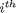 interval contained in an interval object is thus made of the lower and upper bounds located in the position of property arrays lower and upper.
Note: lower and upper are not supposed to be manipulated directly from outside the class; in the case they are, be careful to keep their sizes consistent with each other (i.e. identical)
classdef interval
properties (Access = private)
lower = [] ; % Internal array (of doubles) used to store the lower bounds
upper = [] ; % Internal array (of doubles) used to store the upper bounds
end
Building interval objects
Basically, interval objects may be created through two different ways: by specifying direclty their lower and upper bounds (two arrays of doubles), or by extracting them from a single array of doubles. Both processes are implemented by the following couple of methods, which are supposed to be used only internally (they do not perform any argument checking).
methods (Hidden, Access = private)
copy ( int, lower, upper )
Sets interval int properties lower and upper as specified, returns the newly defined interval.
function int = copy(int, lower, upper) int.lower = lower ; int.upper = upper ; end % copy
extract ( int, array, dim )
Extracts the lower and upper bounds defined in a single array of doubles, sets interval int properties consequently and returns it.
The extraction is performed by splitting array in two along its 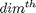 dimension. The depth of array along its dimension shall be therefore equal to 2: the first level gives lower, and second one upper. The singleton dimension dim is removed from lower and upper.
- Example 1: Let us consider the following array:
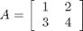
Calling extract ( int, A, 2 ) (with int any interval object) will split A along its second dimension:
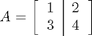
In this way, the first and second columns of A give lower and upper :
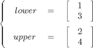
Hence, the newly defined interval object will be a 2-by-1 array of intervals, the first interval being [1 2], and the second one being [3 4].
- Example 2: Keeping A from the previous example, let us consider now extract ( int, A, 1 ) . A is split along its first dimension:
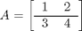
As in the previous example, lower and upper are inferred from the row vectors constituting A, which are 1-by-2 arrays of doubles. Logically, the first dimension of these subarrays is a singleton dimension, which is removed by extract . In this way, lower and upper are not 1-by-2 arrays, but 2-by-1 arrays:
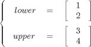
The resulting array of intervals is therefore a 2-by-1 array as well.
Note: Had been A an n-by-2-by- m array, extracting A along its second dimension would have yield an n-by- m array of intervals.
Note: Example 1 is a particular example in which the extraction is performed along the last non singleton dimension of A . As a result, removing this last dimension, that has become singleton after the extraction, does not change in fact the dimension of both extracted subarrays.
function int = extract(int, array, dim) n = ndims(array) ; % n: number of dimensions of array S.type = '()' ; % S: subscript used to split A S.subs = repmat({':'}, 1, n) ; S.subs{dim} = 1 ; int.lower = subsref(array,S) ; % lower = array(:,...,:,1,:,...,:) % | | | S.subs{dim} = 2 ; % 1 dim n int.upper = subsref(array,S) ; % upper = array(:,...,:,2,:,...,:) % | | | % 1 dim n u = [1:dim-1 dim+1:n dim] ; % Dimension dim of lower and upper % is singleton -> removes it by int.lower = permute(int.lower,u) ; % placing it as the last dimension int.upper = permute(int.upper,u) ; end % extract
end % private methods
-- Miscellaneous --
Interval methods that expect to be passed interval objects may also accept arrays of doubles. In this case, these arrays are given to the default constructor, in order to build a proper interval object. This is the purpose of the toInterval function.
methods (Hidden, Static)
function int = toInterval(int)
if isa(int,'numeric') || isa(int,'logical') % Does not do anything if int
int = interval(int) ; % is already an interval object
end
end % interval.toInterval
end % static methods
Instantiating interval objects
Intervals may be defined by different means:
- From nothing, i.e. interval ( ) : lower and upper are initialized to empty arrays
- From an other interval int , i.e. interval ( int ) : lower and upper are copied, equivalent to interval ( int.lower, int.upper )
- From a couple of lower and upper bounds L and U , i.e. interval ( L, U ) : if L and U have the same size, lower = L and upper = U (otherwise an error occurs)
- From an array of doubles A , i.e. interval(A [ , [ ], dim ] ) : the lower and upper bounds are extracted from A (see extract ), that is split along its dimension; if dim is not specified, or invalid (depth of A along dim different from 2) the algorithm acts as follows:
- if dim is invalid (for instance 0), initializes both lower and upper to A - equivalent to interval ( A, A )
- otherwise, if the depth of A along its second dimension is equal to 2, considers dim = 2
- otherwise, looks for a dimension along which the depth of A is equal to 2; if any and only one, considers dim to be this one
- otherwise, initializes both lower and upper to A
methods
function obj = interval(varargin) nin = nargin ; if nin > 0 arg1 = varargin{1} ; if (nin == 1) && isa(arg1, 'interval') obj.lower = arg1.lower ; % 1 parameter, an interval object obj.upper = arg1.upper ; % -> Copy constructor elseif isa(arg1, 'numeric') || isa(arg1, 'logical') if nin == 1 % 1 parameter, an array of numbers % Looks for dimensions along which s = size(arg1) == 2 ; % this array has a depth of 2, % the second dimension being preferred if size(arg1,2) == 2 % If any, extract intervals from % this array obj = obj.extract(arg1,2) ; elseif sum(s) == 1 [~, i] = max(s) ; obj = obj.extract(arg1,i) ; else % If not, constructs degenerate intervals % corresponding to this array obj = copy(obj, arg1, arg1) ; end elseif nin == 2 % 2 parameters, both arrays of doubles arg2 = varargin{2} ; if isa(arg2, 'numeric') || isa(arg2, 'logical') % Considers them as lower / upper % bounds if they have the same size if (ndims(arg1) == ndims(arg2)) && all(size(arg1) == size(arg2)) obj = copy(obj, arg1, arg2) ; else % Otherwise, raises an error error('Incorrect parameters') ; end else error('Incorrect parameters') ; end else arg3 = varargin{3} ; if (isa(arg3, 'numeric') || isa(arg3, 'logical')) && (numel(arg3) == 1) % 3 parameters: an array of % doubles, anything and a number if arg3 > 0 % If the number is positive, extracts the % array along the dimension it designates obj = obj.extract(arg1,arg3) ; else % Otherwise, constructs degenerate % intervals from the array obj = copy(obj, arg1, arg1) ; end else error('Incorrect parameters') ; end end end end end % constructor
Displaying interval objects
The class interval overrides Matlab built-in functions disp and display . These functions behave exactly in the same way.
Intervals are displayed line by line, each line containing the lower and upper bounds of an interval contained in the object.
- Example 1: Let us consider A = interval ( [ 1 2 ; 3 4 ; 5 6] ) .
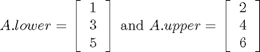
disp( A ) gives:
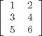
- Example 2: Let us consider B = interval ( [ 1 11 ; 3 13 ; 5 15 ] , [ 2 12 ; 4 14 ; 6 16 ] ) .
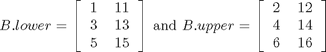
disp( B ) gives:
(:,:,1) =
(:,:,2) =
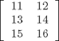
function disp(obj) % cf. eponymous built-in function s = [1 ndims(obj)+1 2:ndims(obj)] ; disp([permute(obj.lower, s) permute(obj.upper, s)]) ; end % disp function display(obj) % cf. eponymous built-in function disp(obj) ; end % display
Manipulating interval objects as arrays
subsref ( int, s )
Overloads Matlab eponymous built-in function.
subsref is implicitely called when indexing arrays, i.e. when performing A ( i ) or A { i }, where A is an array and i an integer. It is also called when accessing a property prop of an object obj , i.e. when doing obj.prop .
The class interval does not support cell indexing ( s.type = '{ }' ). It allows to access the properties of any interval object ( s.type = '.' ). At last, array indexing ( s.type = '( )' ) behaves in the same way as for arrays of scalars: indexing is propagated towards upper and lower , whose selected values are wrapped within a new interval object.
Multiple indexing, such as int(1).lower , is supported.
function int = subsref(int,s) % Subscripted reference s1.type = s(1).type ; % Considers the first level of s1.subs = s(1).subs ; % indexing for the moment if strcmp(s1.type, '()') % Array indexing -> propagates towards % lower and upper and wraps the result int = interval(subsref(int.lower,s1), subsref(int.upper,s1)) ; elseif strcmp(s1.type, '.') % Property access int = builtin('subsref', int, s1) ; else error('Only () and . indexing are supported') ; end if numel(s) > 1 % In case of multiple indexing, % processes the rest of s int = subsref(int,s(2:end)) ; end end % subsref
subsasgn ( int, s, val )
Overloads Matlab eponymous built-in function.
subsasgn is implicitely called when performing indexed assignment statements, i.e. during assignments whose left hand side involves an indexed array or object (see subsref ).
int and s meanings are the same as for subsref . val indicates the right hand side of the assignment.
function int = subsasgn(int,s,val) % Subscripted assignment if ~isempty(val) % Makes the function work even % when s and val are empty if strcmp(s(1).type, '.') % Object indexing % -> propagates towards target property if strcmp(s(1).subs,'lower') if numel(s) > 1 int.lower = subsasgn(int.lower,s(2:end),val) ; elseif isa(val,'interval') int.lower = val.lower ; else int.lower = val ; end elseif strcmp(s(1).subs,'upper') if numel(s) > 1 int.upper = subsasgn(int.upper,s(2:end),val) ; elseif isa(val,'interval') int.upper = val.upper ; else int.upper = val ; end end elseif strcmp(s(1).type, '()') % Array indexing % -> expands val to make it if numel(s) == 1 % match int dimensions val = interval.toInterval(val) ; else val = subsasgn(subsref(int,s(1)), s(2:end), val) ; end % Set lower and upper to their new values int.lower = subsasgn(int.lower,s(1),val.lower) ; int.upper = subsasgn(int.upper,s(1),val.upper) ; end end end % subsasgn
cat ( dim, int... )
Overloads Matlab eponymous built-in function.
cat concatenates the interval objects int along their dimension. In fact, their properties lower and upper are concatenated in the specified way.
function obj = cat(varargin) % cf. eponymous built-in function varargin(cellfun(@(X) isempty(X), varargin(:))) = {interval()} ; if min(cellfun(@(X) isa(X, 'interval'), varargin(2:nargin))) l = cellfun(@(X) X.lower, varargin(2:nargin), 'UniformOutput',false) ; % l: only the lower bounds u = cellfun(@(X) X.upper, varargin(2:nargin), 'UniformOutput',false) ; % u: only the upper bounds obj = interval([]) ; obj.lower = cat(varargin{1}, l{:}) ; % Processes concatenation obj.upper = cat(varargin{1}, u{:}) ; else error('Only intervals may be concatenated') ; end end % cat
vertcat ( int... )
Overloads Matlab eponymous built-in function.
vertcat concatenates the interval objects int vertically, i.e. along the first dimension. Calls cat ( 1, int... ) .
function obj = vertcat(varargin) % cf. eponymous built-in function obj = cat(1,varargin{:}) ; end % vertcat
horzcat ( int... )
Overloads Matlab eponymous built-in function.
horzcat concatenates the interval objects int horizontally, i.e. along the second dimension. Calls cat ( 2, int... ) .
function obj = horzcat(varargin) % cf. eponymous built-in function obj = cat(2,varargin{:}) ; end % horzcat
ndims ( int )
Overloads Matlab eponymous built-in function.
ndims returns the number of dimensions of the interval object int , which is equal to ndims ( int.lower ) .
function r = ndims(int) % cf. eponymous built-in function r = ndims(int.lower) ; end % ndims
size ( int [ , n ] )
Overloads Matlab eponymous built-in function.
Returns the size of interval object int , i.e. that of int.lower . If n is specified, returns the depth of int along its 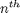 dimension. Otherwise, returns a vector containing the size of int along its dimension for each i between 1 and ndims(int) . If one output or less is required ( nargout < 2 ), this vector takes the form of a row vector of integers. Otherwise, it returns each component of this vector in distinct scalar outputs.
Example 1: s = size ( interval ( [ 1 2 ; 3 4] ) ) returns s = [ 2, 1 ] (nargout = 1).
Example 2: [n, m] = size ( interval ( [ 1 2 ; 3 4 ] ) ) returns n = 2 and m = 1.
function varargout = size(varargin) % cf. eponymous built-in function if nargout < 2 varargout = {size(varargin{1}.lower,varargin{2:nargin})} ; else varargout = num2cell(size(varargin{1}.lower,varargin{2:nargin})) ; end end % size
permute ( a , order )
Overloads Matlab eponymous built-in function.
Përmutes the dimensions of lower and upper as specified.
function a = permute(a, order) a.lower = permute(a.lower, order) ; a.upper = permute(a.upper, order) ; end % permute
repmat ( a, i, j )
Overloads Matlab repmat function for interval arrays.
function r = repmat(a, i, j) r = interval(repmat(a.lower, i, j), repmat(a.upper, i, j)) ; end % repmat
isempty ( obj )
Tells whether interval array a is empty or not.
function a = isempty(a) a = isempty(a.lower) ; end % isempty
cell( varargin )
Overloads Matlab num2cell function for interval arrays (alternative to num2cell).
function varargout = cell(varargin) if nargin > 0 obj = varargin{1} ; varargout = cellfun(@(x,y) interval(x,y),... num2cell(obj.lower, varargin{2:end}),... num2cell(obj.upper, varargin{2:end}),... 'UniformOutput', false) ; else varargout = {} ; end end % cell
num2cell ( varargin )
Overloads Matlab num2cell function for interval arrays.
function varargout = num2cell(varargin) if nargin > 0 obj = varargin{1} ; varargout = cellfun(@(x,y) interval(x,y),... num2cell(obj.lower, varargin{2:end}),... num2cell(obj.upper, varargin{2:end}),... 'UniformOutput', false) ; else varargout = {} ; end end % num2cell
Performing arithmetic operations
The class interval is designed to process intervals vectorially. As a consequence, it considers only element-wise operations: matricial computations are not supported. However, Matlab matricial operators, such as ' * ' or ' / ' , may be used indifferently instead of their element-wise variants, ' .* ' for ' * ' and ' ./ ' for ' / ' .
Interval arithmetic operators are rather supposed to be passed interval objects. However, they also accept arrays of doubles. In that case, an interval object is instantiated from an array of doubles with the default constructor (only one argument).
In addition, every binary arithmetic operator supports singleton expansion (see also Matlab buit-in function bsxfun ).
As a result, it is fully possible to write instructions like:
interval([1 2 ; 3 4]) + 1
which returns a 2-by-1 interval object containing the intervals [2, 3] and [4, 5].
plus ( a, b )
Overloads Matlab operator " + " :
a + b = plus(a,b)
Element-wise addition of the intervals contained in a and b .
function r = plus(a, b) a = interval.toInterval(a) ; % Ensures a and b are interval objects b = interval.toInterval(b) ; rlower = bsxfun(@plus, a.lower, b.lower) ; % Processes lower and upper bounds rupper = bsxfun(@plus, a.upper, b.upper) ; undef = isnan(rlower) | isnan(rupper) ; % Deals with nan values rlower(undef) = nan ; rupper(undef) = nan ; r = a ; r.lower = rlower ; r.upper = rupper ; end % plus
minus ( a, b )
Overloads Matlab operator " - " :
a - b = minus(a,b)
Element-wise subtraction between the intervals contained in a and b .
function r = minus(a, b) a = interval.toInterval(a) ; % Ensures a and b are interval objects b = interval.toInterval(b) ; rlower = bsxfun(@minus, a.lower, b.upper) ; % Processes lower and upper bounds rupper = bsxfun(@minus, a.upper, b.lower) ; undef = isnan(rlower) | isnan(rupper) ; % Deals with nan values rlower(undef) = nan ; rupper(undef) = nan ; r = a ; r.lower = rlower ; r.upper = rupper ; end % minus
uminus ( a )
Overloads Matlab unary operator " - " :
-a = uminus(a)
Element-wise unary minus performed on the intervals contained in a .
function r = uminus(a) r = interval(-a.upper, -a.lower) ; end % uminus
uplus ( a )
Overloads Matlab unary operator " + " :
+a = uplus(a) ( = a)
Element-wise unary plus performed on the intervals contained in a .
function a = uplus(a) end % uplus
times ( a, b )
Overloads Matlab operator " .* " :
a .* b = times(a,b) = mtimes(a,b)
Element-wise multiplication between the intervals contained in a and b .
function r = times(a,b) a = interval.toInterval(a) ; % Ensures a and b are interval objects b = interval.toInterval(b) ; alower = a.lower ; % Uses local variables to store the bounds aupper = a.upper ; % of the operands (up to 4 times faster) blower = b.lower ; bupper = b.upper ; % Expands singleton dimensions if needed if (ndims(alower) ~= ndims(blower)) || any(size(alower) ~= size(blower)) sa = size(alower) ; sb = size(blower) ; sae = sb ; sbe = sa ; sae(sa ~= 1) = 1 ; sbe(sb ~= 1) = 1 ; alower = repmat(alower, sae) ; aupper = repmat(aupper, sae) ; blower = repmat(blower, sbe) ; bupper = repmat(bupper, sbe) ; end % Creates logical indexes to distinguish different cases during % the computation, depending on the sign of the bounds of a and b alp = alower >= 0 ; % Sign of the bounds of a and b aup = aupper >= 0 ; blp = blower >= 0 ; bup = bupper >= 0 ; aln = ~alp ; aun = ~aup ; bln = ~blp ; bun = ~bup ; app = alp & aup ; apn = alp & aun ; anp = aln & aup ; ann = aln & aun ; bpp = blp & bup ; bpn = blp & bun ; bnp = bln & bup ; bnn = bln & bun ; % Spots nan values in a and b undef = isnan(alower) | isnan(aupper) | isnan(blower) | isnan(bupper) ; % Preallocates the result, then starts the multiplication rlower = alower ; rupper = rlower ; % Let us set down a = [a- a+] and b = [b- b+] % Case 1 (a- >= 0, a+ >= 0, b- >= 0, b+ >= 0) i = app & bpp ; rlower(i) = alower(i) .* blower(i) ; rupper(i) = aupper(i) .* bupper(i) ; % Case 2 (a- >= 0, a+ >= 0, b- >= 0, b+ < 0) i = app & bpn ; rlower(i) = alower(i) .* blower(i) ; rupper(i) = alower(i) .* bupper(i) ; % Case 3 (a- >= 0, a+ >= 0, b- < 0, b+ >= 0) i = app & bnp ; rlower(i) = aupper(i) .* blower(i) ; rupper(i) = aupper(i) .* bupper(i) ; % Case 4 (a- >= 0, a+ >= 0, b- < 0, b+ < 0) i = app & bnn ; rlower(i) = aupper(i) .* blower(i) ; rupper(i) = alower(i) .* bupper(i) ; % Case 5 (a- >= 0, a+ < 0, b- >= 0, b+ >= 0) i = apn & bpp ; rlower(i) = alower(i) .* blower(i) ; rupper(i) = aupper(i) .* blower(i) ; % Case 6 (a- >= 0, a+ < 0, b- >= 0, b+ < 0) i = apn & bpn ; rlower(i) = max(alower(i) .* blower(i), aupper(i) .* bupper(i)) ; rupper(i) = min(alower(i) .* bupper(i), aupper(i) .* blower(i)) ; % Case 7 (a- >= 0, a+ < 0, b- < 0, b+ >= 0) i = apn & bnp ; rlower(i) = 0 ; rupper(i) = 0 ; % Case 8 (a- >= 0, a+ < 0, b- < 0, b+ < 0) i = apn & bnn ; rlower(i) = aupper(i) .* bupper(i) ; rupper(i) = alower(i) .* bupper(i) ; % Case 9 (a- < 0, a+ >= 0, b- >= 0, b+ >= 0) i = anp & bpp ; rlower(i) = alower(i) .* bupper(i) ; rupper(i) = aupper(i) .* bupper(i) ; % Case 10 (a- < 0, a+ >= 0, b- >= 0, b+ < 0) i = anp & bpn ; rlower(i) = 0 ; rupper(i) = 0 ; % Case 11 (a- < 0, a+ >= 0, b- < 0, b+ >= 0) i = anp & bnp ; rlower(i) = min(alower(i) .* bupper(i), aupper(i) .* blower(i)) ; rupper(i) = max(alower(i) .* blower(i), aupper(i) .* bupper(i)) ; % Case 12 (a- < 0, a+ >= 0, b- < 0, b+ < 0) i = anp & bnn ; rlower(i) = aupper(i) .* blower(i) ; rupper(i) = alower(i) .* blower(i) ; % Case 13 (a- < 0, a+ < 0, b- >= 0, b+ >= 0) i = ann & bpp ; rlower(i) = alower(i) .* bupper(i) ; rupper(i) = aupper(i) .* blower(i) ; % Case 14 (a- < 0, a+ < 0, b- >= 0, b+ < 0) i = ann & bpn ; rlower(i) = aupper(i) .* bupper(i) ; rupper(i) = aupper(i) .* blower(i) ; % Case 15 (a- < 0, a+ < 0, b- < 0, b+ >= 0) i = ann & bnp ; rlower(i) = alower(i) .* bupper(i) ; rupper(i) = alower(i) .* blower(i) ; % Case 16 (a- < 0, a+ < 0, b- < 0, b+ < 0) i = ann & bnn ; rlower(i) = aupper(i) .* bupper(i) ; rupper(i) = alower(i) .* blower(i) ; % Deals with nan values rlower(undef) = nan ; rupper(undef) = nan ; % Fast assembling of the result r = a ; r.lower = rlower ; r.upper = rupper ; end % times
mtimes ( a, b )
Overloads Matlab operator " * " :
a * b = mtimes(a,b) = times(a,b)
Element-wise multiplication between the intervals contained in a and b .
function r = mtimes(a,b) r = times(a,b) ; end % times
rdivide ( a, b )
Overloads Matlab operator " ./ " :
a ./ b = rdivide(a,b) = mrdivide(a,b)
Element-wise multiplication between the intervals contained in a and b .
function r = rdivide(a,b) a = interval.toInterval(a) ; % Ensures a and b are interval objects b = interval.toInterval(b) ; alower = a.lower ; % Uses local variables to store the bounds aupper = a.upper ; % of the operands (up to 4 times faster) blower = b.lower ; bupper = b.upper ; % Expands singleton dimensions if needed if (ndims(alower) ~= ndims(blower)) || any(size(alower) ~= size(blower)) alower = bsxfun(@plus, alower, zeros(size(blower))) ; aupper = bsxfun(@plus, aupper, zeros(size(bupper))) ; blower = bsxfun(@plus, blower, zeros(size(alower))) ; bupper = bsxfun(@plus, bupper, zeros(size(aupper))) ; end % Creates logical indexes to distinguish different cases during % the computation, depending on the sign of the bounds of a and % b, as well as the zeros of b alp = alower >= 0 ; aup = aupper >= 0 ; blp = blower > 0 ; bup = bupper > 0 ; aln = ~alp ; aun = ~aup ; bln = blower < 0 ; bun = bupper < 0 ; blz = blower == 0 ; buz = bupper == 0 ; bluz = (blp & bun) | (bln & bup) ; % b contains 0 pppp = alp & aup & blp & bup ; ppnn = alp & aup & bln & bun ; pnpp = alp & aun & blp & bup ; pnnn = alp & aun & bln & bun ; nppp = aln & aup & blp & bup ; npnn = aln & aup & bln & bun ; nnpp = aln & aun & blp & bup ; nnnn = aln & aun & bln & bun ; pppz = alp & aup & blp & buz ; ppzp = alp & aup & blz & bup ; ppnz = alp & aup & bln & buz ; ppzn = alp & aup & blz & bun ; pnpz = alp & aun & blp & buz ; pnzp = alp & aun & blz & bup ; pnnz = alp & aun & bln & buz ; pnzn = alp & aun & blz & bun ; nppz = aln & aup & blp & buz ; npzp = aln & aup & blz & bup ; npnz = aln & aup & bln & buz ; npzn = aln & aup & blz & bun ; nnpz = aln & aun & blp & buz ; nnzp = aln & aun & blz & bup ; nnnz = aln & aun & bln & buz ; nnzn = aln & aun & blz & bun ; % Spots nan values in a and b undef = isnan(alower) | isnan(aupper) | isnan(blower) | isnan(bupper) ; % Preallocates the result, then starts the division rlower = alower ; rupper = aupper ; % Let us set down a = [a- a+] and b = [b- b+] % Case 1 (a- >= 0, a+ >= 0, b- > 0, b+ > 0) rlower(pppp) = alower(pppp) ./ bupper(pppp) ; rupper(pppp) = aupper(pppp) ./ blower(pppp) ; % Case 2 (a- >= 0, a+ >= 0, b- < 0, b+ < 0) rlower(ppnn) = aupper(ppnn) ./ bupper(ppnn) ; rupper(ppnn) = alower(ppnn) ./ blower(ppnn) ; % Case 3 (a- >= 0, a+ < 0, b- > 0, b+ > 0) rlower(pnpp) = alower(pnpp) ./ bupper(pnpp) ; rupper(pnpp) = aupper(pnpp) ./ bupper(pnpp) ; % Case 4 (a- >= 0, a+ < 0, b- < 0, b+ < 0) rlower(pnnn) = aupper(pnnn) ./ blower(pnnn) ; rupper(pnnn) = alower(pnnn) ./ blower(pnnn) ; % Case 5 (a- < 0, a+ >= 0, b- > 0, b+ > 0) rlower(nppp) = alower(nppp) ./ blower(nppp) ; rupper(nppp) = aupper(nppp) ./ blower(nppp) ; % Case 6 (a- < 0, a+ >= 0, b- < 0, b+ < 0) rlower(npnn) = aupper(npnn) ./ bupper(npnn) ; rupper(npnn) = alower(npnn) ./ bupper(npnn) ; % Case 7 (a- < 0, a+ < 0, b- > 0, b+ > 0) rlower(nnpp) = alower(nnpp) ./ blower(nnpp) ; rupper(nnpp) = aupper(nnpp) ./ bupper(nnpp) ; % Case 8 (a- < 0, a+ < 0, b- < 0, b+ < 0) rlower(nnnn) = aupper(nnnn) ./ blower(nnnn) ; rupper(nnnn) = alower(nnnn) ./ bupper(nnnn) ; % Case 9 (b contains 0 but 0 is not a bound of b) int0 = bluz | (blz & buz) ; rlower(int0) = nan ; rupper(int0) = nan ; % Case 10 (a- >= 0, a+ >= 0, b- > 0, b+ == 0) rlower(pppz) = inf ; rupper(pppz) = a.upper(pppz) ./ blower(pppz) ; % Case 11 (a- >= 0, a+ >= 0, b- == 0, b+ > 0) rlower(ppzp) = alower(ppzp) ./ bupper(ppzp) ; rupper(ppzp) = inf ; % Case 12 (a- >= 0, a+ >= 0, b- < 0, b+ == 0) rlower(ppnz) = -inf ; rupper(ppnz) = alower(ppnz) ./ blower(ppnz) ; % Case 13 (a- >= 0, a+ >= 0, b- == 0, b+ < 0) rlower(ppzn) = aupper(ppzn) ./ bupper(ppzn) ; rupper(ppzn) = -inf ; % Case 14 (a- >= 0, a+ < 0, b- > 0, b+ == 0) rlower(pnpz) = inf ; rupper(pnpz) = -inf ; % Case 15 (a- >= 0, a+ < 0, b- == 0, b+ > 0) rlower(pnzp) = alower(pnzp) ./ bupper(pnzp) ; rupper(pnzp) = aupper(pnzp) ./ bupper(pnzp) ; % Case 16 (a- >= 0, a+ < 0, b- < 0, b+ == 0) rlower(pnnz) = aupper(pnnz) ./ blower(pnnz) ; rupper(pnnz) = alower(pnnz) ./ blower(pnnz) ; % Case 17 (a- >= 0, a+ < 0, b- == 0, b+ < 0) rlower(pnzn) = inf ; rupper(pnzn) = -inf ; % Case 18 (a- < 0, a+ >= 0, b- > 0, b+ == 0) rlower(nppz) = alower(nppz) ./ blower(nppz) ; rupper(nppz) = aupper(nppz) ./ blower(nppz) ; % Case 19 (a- < 0, a+ >= 0, b- == 0, b+ > 0) rlower(npzp) = -inf ; rupper(npzp) = inf ; % Case 20 (a- < 0, a+ >= 0, b- < 0, b+ == 0) rlower(npnz) = -inf ; rupper(npnz) = inf ; % Case 21 (a- < 0, a+ >= 0, b- == 0, b+ < 0) rlower(npzn) = aupper(npzn) ./ bupper(npzn) ; rupper(npzn) = alower(npzn) ./ bupper(npzn) ; % Case 22 (a- < 0, a+ < 0, b- > 0, b+ == 0) rlower(nnpz) = alower(nnpz) ./ blower(nnpz) ; rupper(nnpz) = -inf ; % Case 23 (a- < 0, a+ < 0, b- == 0, b+ > 0) rlower(nnzp) = -inf ; rupper(nnzp) = aupper(nnzp) ./ bupper(nnzp) ; % Case 25 (a- < 0, a+ < 0, b- < 0, b+ == 0) rlower(nnnz) = aupper(nnnz) ./ blower(nnnz) ; rupper(nnnz) = inf ; % Case 26 (a- < 0, a+ < 0, b- == 0, b+ < 0) rlower(nnzn) = inf ; rupper(nnzn) = alower(nnzn) ./ bupper(nnzn) ; % Deals with nan values rlower(undef) = nan ; rupper(undef) = nan ; % Fast assembling of the result r = a ; r.lower = rlower ; r.upper = rupper ; end % rdivide
mrdivide ( a, b )
Overloads Matlab operator " / " :
a / b = mrdivide(a,b) = rdivide(a,b)
Element-wise multiplication between the intervals contained in a and b .
function r = mrdivide(a,b) r = rdivide(a,b) ; end % mrdivide
power ( a, n )
Overloads Matlab operator " .^ " :
a.^n = power(a,n) = mpower(a,n)
Element-wise power function. n must be a real number.
function a = power(a,n) if n < 0 % If n is negative, comes down to the positive case a = 1/power(a, -n) ; elseif n~= 1 % n = 1: a^1 = a (no computation is required) if n == round(n) % n is a positive integer if mod(n,2) == 1 % n is odd, x |-> x^n increases on R a.lower = power(a.lower, n) ; a.upper = power(a.upper, n) ; elseif n == 0 % n = 0 : a^0 = 1 a = interval(ones(size(a)), [], 0) ; elseif n == 2 % n = 2 (sqr is faster than a generic implementation) a = sqr(a) ; else % n is even (and positive) alp = a.lower >= 0 ; aup = a.upper >= 0 ; aln = a.lower <= 0 ; aun = a.upper <= 0 ; pp = alp & aup ; nn = aln & aun ; np = aln & aup ; pn = alp & aun ; a.lower(pp) = power(a.lower(pp),n) ; a.upper(pp) = power(a.upper(pp),n) ; alowernn = power(a.upper(nn),n) ; a.upper(nn) = power(a.lower(nn),n) ; a.lower(nn) = alowernn ; a.upper(np) = max(power(a.lower(np),n), power(a.upper(np),n)) ; a.lower(np) = 0 ; a.lower(pn) = max(power(a.lower(pn),n), power(a.upper(pn),n)) ; a.upper(pn) = 0 ; end else % n is a non-integer positive real % x |-> x^n increases on R+ alp = a.lower >= 0 ; aup = a.upper >= 0 ; a.lower(alp) = power(a.lower(alp), n) ; a.upper(aup) = power(a.upper(aup), n) ; a.lower(~alp) = nan ; a.upper(~aup) = nan ; end end end % power
mpower ( a, n )
Overloads Matlab operator " ^ " :
a^n = mpower(a,n) = power(a,n)
Element-wise power function. n must be a real number.
function r = mpower(a,b) a = interval.toInterval(a) ; r = power(a,b) ; end % mpower
sqr(a)
Square function, called by power and mpower when n = 2 (faster than a generic implementation dealing with any n ).
function r = sqr(r) a = r.lower ; % Extracts the lower bounds (an array of doubles) b = r.upper ; % Extracts the upper bounds (an array of doubles) k = (a >= 0) & (b >= 0) ; % Case 1: a >= 0 and b >= 0 r.lower(k) = a(k).^2 ; r.upper(k) = b(k).^2 ; k = (a <= 0) & (b >= 0) ; % Case 2: a <= 0 and b >= 0 r.lower(k) = 0 ; r.upper(k) = max(-a(k),b(k)).^2 ; k = (a >= 0) & (b <= 0) ; % Case 3: a >= 0 and b <= 0 r.lower(k) = max(a(k),-b(k)).^2 ; r.upper(k) = 0 ; k = (a <= 0) & (b <= 0) ; % Case 4: a <= 0 and b <= 0 r.lower(k) = b(k).^2 ; r.upper(k) = a(k).^2 ; end % sqr
sqrt ( r, varargin )
Element-wise square root operation.
The domain of the result may be restricted by giving an hint about its sign in varargin in the following way: * 'p' if the result is known to be positive * 'n' if the result is known to be negative
The varargin parameter may be ommitted in case no information is known about the sign of the result.
function r = sqrt(r, varargin) if nargin == 1 r = join(sqrt(r,'p'), sqrt(r,'n')) ; else lp = (r.lower >= 0) ; ln = (r.lower < 0) ; up = (r.upper >= 0) ; un = (r.upper < 0) ; p = varargin{1} ; if isa(p, 'char') if p == 'p' r.lower(lp) = sqrt(r.lower(lp)) ; r.upper(up) = sqrt(r.upper(up)) ; r.lower(ln) = nan ; r.upper(un) = nan ; elseif p == 'n' [r.lower(lp), r.upper(up)] = deal(-sqrt(r.upper(lp)), -sqrt(r.lower(up))) ; r.lower(ln) = nan ; r.upper(un) = nan ; end else pos = p >= 0 ; neg = p <= 0 ; und = ~(pos|neg) ; s.type = '()' ; s.subs = {pos} ; r = subsasgn(r,s,sqrt(subsref(r,s), 'p')) ; s.subs = {neg} ; r = subsasgn(r,s,sqrt(subsref(r,s), 'n')) ; s.subs = {und} ; r = subsasgn(r,s,sqrt(subsref(r,s))) ; end end end % sqrt
nthroot ( r, n, varargin )
Element-wise nth root operation.
The domain of the result may be restricted by giving an hint about its sign in varargin in the following way: * 'p' if the result is known to be positive * 'n' if the result is known to be negative
The varargin parameter may be ommitted in case no information is known about the sign of the result.
function r = nthroot(r, n, varargin) if n ~= round(n) % Checks whether n is an integer error('n must be an integer') ; elseif n < 0 % n is negative -> comes down to positive case r = 1/nthroot(r, -n, varargin{:}) ; elseif n == 2 % n = 2 : uses sqrt (faster) r = sqrt(r, varargin{:}) ; elseif mod(n,2) == 0 % n is even: considers negative / positive roots as required if nargin == 2 r = join(nthroot(r,n,'p'), nthroot(r,n,'n')) ; else lp = (r.lower >= 0) ; ln = (r.lower < 0) ; up = (r.upper >= 0) ; un = (r.upper < 0) ; p = varargin{1} ; if isa(p, 'char') if p == 'p' r.lower(lp) = nthroot(r.lower(lp),n) ; r.upper(up) = nthroot(r.upper(up),n) ; r.lower(ln) = nan ; r.upper(un) = nan ; elseif p == 'n' r.lower(lp) = -nthroot(r.lower(lp),n) ; r.upper(up) = -nthroot(r.upper(up),n) ; s.type = '()' ; s.subs = {lp & up} ; r = subsasgn(r,s,subsref(r,s).') ; r.lower(ln) = nan ; r.upper(un) = nan ; end else pos = p >= 0 ; neg = p <= 0 ; und = ~(pos|neg) ; s.type = '()' ; s.subs = {pos} ; r = subsasgn(r,s,nthroot(subsref(r,s), n, 'p')) ; s.subs = {neg} ; r = subsasgn(r,s,nthroot(subsref(r,s), n, 'n')) ; s.subs = {und} ; r = subsasgn(r,s,nthroot(subsref(r,s), n)) ; end end elseif n ~= 1 % Case n = 1: r |-> r, no computation is required % For n odd, x |-> x^(1/n) increases on R r.lower = nthroot(r.lower, n) ; r.upper = nthroot(r.upper, n) ; end end % nthroot
exp ( a )
Element-wise exponential operation.
function a = exp(a) a.lower = exp(a.lower) ; a.upper = exp(a.upper) ; end % exp
ln ( a )
Element-wise natural logarithm operation (alternative notation to log).
function a = ln(a) a = log(a) ; end % ln
log ( a )
Element-wise natural logarithm operation.
function a = log(a) undef = ~(a.lower > 0) | ~(a.upper > 0) ; a.lower(~undef) = log(a.lower(~undef)) ; a.upper(~undef) = log(a.upper(~undef)) ; a.lower(undef) = nan ; a.upper(undef) = nan ; end % log
mod ( a, d )
Overloads Matlab mod function for interval arrays.
function r = mod(a,d) r = mod(a.lower, d) ; r = interval(r, a.upper - a.lower + r) ; end % mod
sin ( a )
Element-wise sine operation.
function r = sin(a) undef = isnan(a) ; modal = a.lower > a.upper ; s.type = '()' ; s.subs = {modal} ; a = subsasgn(a,s, subsref(a,s).') ; s.subs = {~undef} ; a = subsasgn(a, s, mod(subsref(a, s), 2*pi)) ; r = interval(-ones(size(a)), ones(size(a))) ; s2pi = width(a) < 2*pi ; s.subs = {s2pi} ; a2pi = subsref(a,s) ; a2pil = sin(a2pi.lower) ; a2piu = sin(a2pi.upper) ; u = min(a2pil, a2piu) ; v = max(a2pil, a2piu) ; r.lower(s2pi & isout(1.5*pi,a) & isout(3.5*pi,a)) = u(isout(1.5*pi,a2pi) & isout(3.5*pi,a2pi)) ; r.upper(s2pi & isout(0.5*pi,a) & isout(2.5*pi,a)) = v(isout(0.5*pi,a2pi) & isout(2.5*pi,a2pi)) ; s.subs = {modal} ; r = subsasgn(r,s, subsref(r,s).') ; r.lower(undef) = nan ; r.upper(undef) = nan ; end % sin
cos ( a )
Element-wise cosine operation.
function a = cos(a) a = sin(a + .5*pi) ; end % cos
asin ( a, varargin )
Element-wise arcsine operation.
A domain containing the result may be specified in varargin.
function a = asin(a, varargin) mia = a.lower > a.upper ; [a.lower(mia) a.upper(mia)] = deal(a.upper(mia), a.lower(mia)) ; undef = ~(a.lower >= -1) | ~(a.upper <= 1) ; ii = (a.lower > -1) & (a.upper < 1) ; ei = (a.lower == -1) & (a.upper < 1) ; ie = (a.lower > -1) & (a.upper == 1) ; ee = (a.lower == -1) & (a.upper == 1) ; if nargin == 1 a.lower(ii) = asin(a.lower(ii)) ; a.upper(ii) = asin(a.upper(ii)) ; [a.lower(ei), a.upper(ei)] = deal(-pi-asin(a.upper(ei)), asin(a.upper(ei))) ; [a.lower(ie), a.upper(ie)] = deal(asin(a.lower(ie)), pi-asin(a.lower(ie))) ; a.lower(ee) = -inf ; a.upper(ee) = inf ; else d = varargin{1} ; asin1 = asin(a) ; k = ceil((d.lower - asin1.upper)*.5/pi) - 1 ; l = asin1.lower + 2*k*pi ; k = floor((d.upper - asin1.lower)*.5/pi) + 1 ; u = asin1.upper + 2*k*pi ; asin2 = pi - interval(asin1.lower(ii), asin1.upper(ii)) ; dii = interval(d.lower(ii), d.upper(ii)) ; k = ceil((dii.lower + asin2.upper-pi)*.5/pi) - 1 ; l(ii) = min(l(ii), asin2.lower + 2*k*pi) ; k = floor((dii.upper + asin2.lower-pi)*.5/pi) + 1 ; u(ii) = max(u(ii), asin2.upper + 2*k*pi) ; a = d & interval(l,u) ; end [a.lower(mia) a.upper(mia)] = deal(a.upper(mia), a.lower(mia)) ; a.lower(undef) = nan ; a.upper(undef) = nan ; end % arcsin
asin ( a, varargin )
Element-wise arccosine operation.
A domain containing the result may be specified in varargin.
function a = acos(a, varargin) if nargin == 1 a = .5*pi - asin(a) ; else d = interval.toInterval(varargin{1}) ; a = .5*pi - asin(a, .5*pi - d) ; end end % acos
% *abs ( r )* % % Element-wise absolute value operation. function r = abs(r) np = (r.lower <= 0) & (r.upper >= 0) ; pn = (r.lower >= 0) & (r.upper <= 0) ; nn = (r.lower <= 0) & (r.upper <= 0) ; r.upper(np) = max(-r.lower(np), r.upper(np)) ; r.lower(np) = 0 ; r.lower(pn) = max(r.lower(pn), -r.upper(pn)) ; r.upper(pn) = 0 ; s.type = '()' ; s.subs = {nn} ; r = subsasgn(r, s, -subsref(r,s)) ; end % abs
Binary relations
lt ( a, b )
Overloads Matlab operator " < " :
(a < b) = lt(a,b)
Element-wise less than logical test. For two single intervals [a] and [b] :
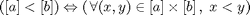
function r = lt(a,b) r = bsxfun(@lt, interval.toInterval(a).upper, interval.toInterval(b).lower) ; end % lt
gt ( a, b )
Overloads Matlab operator " > " :
(a > b) = gt(a,b)
Element-wise greater than logical test. For two single intervals [a] and [b] :
function r = gt(a,b) r = bsxfun(@gt, interval.toInterval(a).lower, interval.toInterval(b).upper) ; end % gt
le ( a, b )
Overloads Matlab operator " <= " :
(a <= b) = le(a,b)
Element-wise less than or equal to logical test. For two single intervals [a] and [b] :
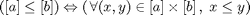
function r = le(a,b) r = bsxfun(@le, interval.toInterval(a).upper, interval.toInterval(b).lower) ; end % le
ge ( a, b )
Overloads Matlab operator " >= " :
(a >= b) = ge(a,b)
Element-wise greater than or equal to logical test. For two single intervals [a] and [b] :
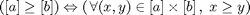
function r = ge(a,b) r = bsxfun(@ge, interval.toInterval(a).lower, interval.toInterval(b).upper) ; end % ge
eq ( a, b )
Overloads Matlab operator " == " :
(a == b) = eq(a,b)
Element-wise equal to logical test. For two single intervals [a] and [b] :
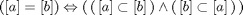
function r = eq(a,b) a = interval.toInterval(a) ; b = interval.toInterval(b) ; r = bsxfun(@eq, a.lower, b.lower) & bsxfun(@eq, a.upper, b.upper) ; end % eq
ne ( a, b )
Overloads Matlab operator " ~= " :
(a ~= b) = ne(a,b)
Element-wise not equal to logical test. For two single intervals [a] and [b] :
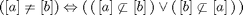
function r = ne(a,b) a = interval.toInterval(a) ; b = interval.toInterval(b) ; r = bsxfun(@ne, a.lower, b.lower) | bsxfun(@ne, a.upper, b.upper) ; end % ne
and ( a, b )
Overloads Matlab operator " & " :
a & b = and(a,b)
This element-wise operation computes the intersection of a and b. For two single intervals [a] and [b] :
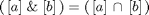
function r = and(a,b) % r = intersection(a,b) a = interval.toInterval(a) ; b = interval.toInterval(b) ; r = interval(bsxfun(@max,a.lower,b.lower), bsxfun(@min,a.upper,b.upper)) ; end % and
or ( a, b )
Overloads Matlab operator " | " :
a | b = or(a,b)
This element-wise operation computes the union of a and b. For two single intervals [a] and [b] :
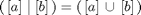
function r = or(a,b) % r = union(a,b) a = interval.toInterval(a) ; b = interval.toInterval(b) ; r = interval(bsxfun(@min,a.lower,b.lower), bsxfun(@max,a.upper,b.upper)) ; end % or
isin ( a, b)
Element-wise inclusion test between the intervals contained in a and those contained in b .
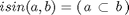
function r = isin(a,b) a = interval.toInterval(a) ; b = interval.toInterval(b) ; r = bsxfun(@ge, a.lower, b.lower) & bsxfun(@le, a.upper, b.upper) ; end % isin
isout ( a, b)
Element-wise exclusion test between the intervals contained in a and those contained in b .
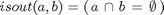
function r = isout(a,b) a = interval.toInterval(a) ; b = interval.toInterval(b) ; r = bsxfun(@lt, a.upper, b.lower) | bsxfun(@gt, a.lower, b.upper) ; end % isout
Other operations
dual ( a )
Inverse the modality of a : if a = [ a.lower, a.upper ], then dual(a) = [ a.upper, a.lower ].
function b = dual(a) % b = dual(a) (switches the modality) b = a ; b.lower = a.upper ; b.upper = a.lower ; end
transpose ( a )
Overloads Matlab operator " .' " :
a.' = transpose(a)
This element-wise operation switches the modality of a (see dual ).
function b = transpose(a) % r = dual(a) (switches the modality) b = a ; b.lower = a.upper ; b.upper = a.lower ; end % transpose
ctranspose ( a )
Overloads Matlab operator " ' " :
a' = ctranspose(a)
Calls ctranspose on internal arrays lower and upper . Switches their first and second dimensions.
function a = ctranspose(a) % r = r' (transposes the internal arrays) a.lower = a.lower' ; a.upper = a.upper' ; end % ctranspose
width ( a )
Returns the width of each interval contained in a , i.e. their upper bounds minus their lower bounds. For any interval a, width(a) = a.upper - a.lower.
function a = width(a) a = a.upper - a.lower ; end % width
widthMax ( a )
Returns the width of the largest interval contained in a (largest : in the way defined by width).
function r = widthMax(a) r = max(a.upper(:) - a.lower(:)) ; end % widthMax
mid ( a )
Returns the median points of the intervals contained in a .
function r = mid(a) r = .5*(a.lower + a.upper) ; end % mid
bisect ( a )
Bisects the boxes contained in a, with respect to their largest component (i.e. the largest interval of each one of them), and returns the resulting boxes.
For a given box, the width of its components is considered relatively to a given vector, w0. A value 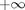 in w0 indicates that no bisection shall be performed along the corresponding component(s) in a.
The input a and the output r are arrays of interval objects that are interpreted using the parameters bisectdim and catdim:
- bisectdim : indicates the dimension along which intervals are placed in the array to form a box (e.g. 2 if boxes are given as row vectors)
- catdim : indicates the dimension of the box list structure in the array (e.g. 1 if a row of the array contains a box)
Example: Let us consider A, defined as:
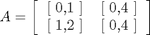
Assuming bisectdim = 2 and catdim = 1, A contains two boxes, [0,1] x [0,4] on one hand, and [1,2] x [0,4] on the other hand. Assuming also w0 = 1, bisect returns the following interval array R :
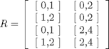
function r = bisect(a, w0, bisectdim, catdim) if isempty(a) % Checks whether a is empty r = a ; else % If not... % Computes imax, a vector along catdim indicating, for each box, the index % of the component to be bisected (i.e. the largest one with respect to w0): % - boxdim : number of components per box (i.e. the number of dimensions of a box) % - i = [ 1 bisectdim 3 4 ... bisectdim-1 2 bisectdim+1 ... n ] % ^ ^ % 2 bisectdim % - w0(:)' : makes w0 a row vector % - permute(w0(:)',i) : permutes the 2nd and the bisectdimth dimensions of w0(:)', % i.e. makes w0 a vector along bisectdim % - max(u, [], bisectdim) : returns the maximal values of u along its bisectdimth dimension % (first output), and their position in u (second output) boxdim = size(a,bisectdim) ; i = 1:boxdim ; i(2) = bisectdim ; i(bisectdim) = 2 ; [~, imax] = max(bsxfun(@rdivide, width(a), permute(w0(:)',i)), [], bisectdim) ; % Computes index, a boolean vector indicating the positions of the intervals to be bisected in a: % - permute(1:boxdim, i) : creates a vector [ 1 2 ... boxdim ] along the bisectdimth dimension % - bsxfun(@eq, imax, permute(1:boxdim, i)) : tells where are located the intervals identified % by imax in a, returns a logical index index = bsxfun(@eq, imax, permute(1:boxdim, i)) ; % Computes the resulting vector of boxes... r = a ; % Copies a mid = .5 * (r.upper(index) + r.lower(index)) ; % Computes the center of the intervals to be bisected r.upper(index) = mid ; % Lower half of a a.lower(index) = mid ; % Upper half of a ; reuses parameter a to store the result r = cat(catdim, r, a) ; % Concatenates the boxes along the specified dimension end end % bisect
join ( a, b [, dim] )
join may be called in the following ways:
- join(a, b)
Performs element-wise union between interval arrays a and b (a and b shall have the same size).
In the case b is an array of singletons or a single singleton, b may be possibly an array of doubles.
- join(a, [ ], dim)
Joins the intervals contained in an interval array a along its dimension.
function r = join(a, b, varargin) if nargin == 2 if isa(b, 'interval') r = a ; r.lower = min(a.lower, b.lower) ; r.upper = max(a.upper, b.upper) ; r.lower(isnan(a.lower) | isnan(b.lower)) = nan ; r.upper(isnan(a.upper) | isnan(b.upper)) = nan ; else r = a ; r.lower = min(a.lower, [], b) ; r.upper = max(a.upper, [], b) ; end else r = a ; r.lower = min(a.lower, [], varargin{1}) ; r.upper = max(a.upper, [], varargin{1}) ; end end % join
inter ( a, b [, dim] )
inter may be called in the following ways:
- inter(a, b)
Performs element-wise intersection between interval arrays a and b (a and b shall have the same size).
In the case b is an array of singletons or a single singleton, b may be possibly an array of doubles.
- inter(a, [ ], dim)
Intersects the intervals contained in an interval array a along its dimension.
Example : Let us consider:
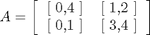
Then:
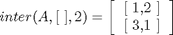
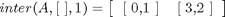
function r = inter(a, b, varargin) if nargin == 2 if isa(b, 'interval') r = a ; r.lower = max(a.lower, b.lower) ; r.upper = min(a.upper, b.upper) ; r.lower(isnan(a.lower) | isnan(b.lower)) = nan ; r.upper(isnan(a.upper) | isnan(b.upper)) = nan ; else r = a ; r.lower = max(a.lower, [], b) ; r.upper = min(a.upper, [], b) ; end else r = a ; r.lower = max(a.lower, [], varargin{1}) ; r.upper = min(a.upper, [], varargin{1}) ; end end % inter
volume ( a, dim )
Computes the volume of each box of a box array.
The input a is an interval array. Boxes are inferred from a by considering vectors of intervals aligned along its dimension.
function a = volume(a, dim) a = prod(a.upper-a.lower, dim) ; end % volume
sum ( a, varargin )
Overloads Matlab sum function for interval arrays.
function a = sum(a, varargin) if nargin == 1 a = interval(sum(a.lower), sum(a.upper)) ; else dim = varargin{1} ; a = interval(sum(a.lower, dim), sum(a.upper, dim)) ; end end % sum
mean ( a, varargin )
Overloads Matlab mean function for interval arrays.
function a = mean(a, varargin) if nargin == 1 a = interval(mean(a.lower), mean(a.upper)) ; else dim = varargin{1} ; a = interval(mean(a.lower, dim), mean(a.upper, dim)) ; end end % mean
isreal ( a )
Tells whether the bounds of the intervals contained in a are both real, for each one of them.
function a = isreal(a) a = isreal(a.lower) & isreal(a.upper) ; end % isreal
isnan ( a )
Tells whether at least one bound of the intervals contained in a is not a number, for each one of them.
function a = isnan(a) a = isnan(a.lower) | isnan(a.upper) ; end % isnan
end % methods
end % classdef